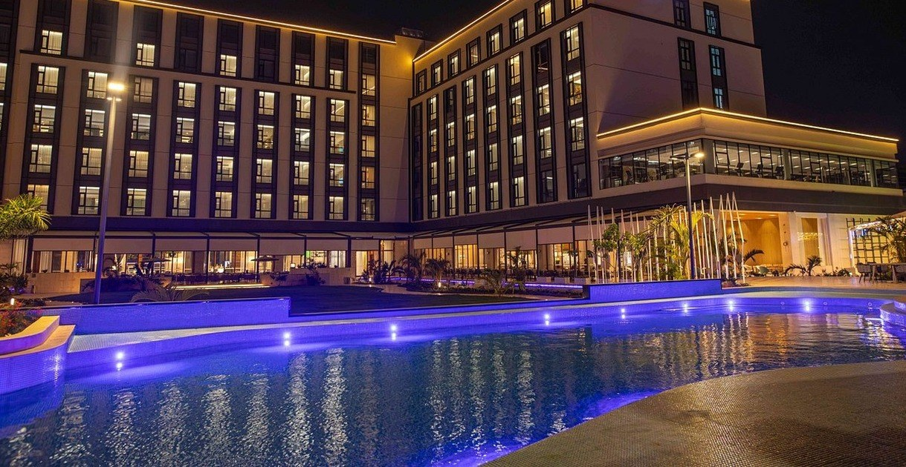

Photograph: Onyango George / EA Hospitality Pulse
Kenya is about to re-grade its hotels. The stars being sold today were set in 2018.
The Tourism Regulatory Authority starts its national classification exercise in Nairobi and Kiambu on 26 October, eight years after the last one. Kenya is the only EAC state with more four-star hotels than three-star, and its public register of classified hotels currently returns a single record named Test Entity 1.
The notice is short, as these things are. Managers of tourism establishments in Nairobi and Kiambu counties are to complete an online pre-qualification form, because from 26 October to 4 December the Tourism Regulatory Authority will arrive to assess, classify and grade them against East African Community quality standards. Nakuru and Baringo follow from 6 to 18 December. Central Kenya and the Mount Kenya region are booked for 11 January to 15 February 2027. The stated purpose is to improve service quality and to build consumer confidence through consistent standards.
Nothing in that notice tells an operator the thing they most need to know, which is what happens to a property that comes out of the exercise with fewer stars than it went in with.
That is not a hypothetical worry. The last national classification in Kenya was conducted in 2018. The Authority's own quality assurance page states that national classification runs on a five-year cycle, with new and upgraded establishments assessed on a need-driven basis in between. By that standard the cycle lapsed in 2023. The exercise now beginning was announced for February 2025, when the Authority told the trade press that accreditation had been completed as a precursor. It is starting in the last week of October 2026, twenty months later, in two counties.
So the grade attached to a Kenyan hotel this morning was in most cases awarded eight years ago, by assessors applying criteria the East African Community has since reviewed, to a property that has since changed its food and beverage offer, its rooms, its management contract and in many cases its owner. It is the oldest number in Kenyan hospitality, and it is printed on the booking page.
Rebecca Miano, Cabinet Secretary for Tourism and Wildlife, has put the ambition plainly, telling The Standard that all hospitality properties will be classified afresh by the Authority. Afresh is the operative word. This is not a renewal exercise in which a four-star hotel confirms it is still a four-star hotel. It is a reassessment against revised criteria, and the Authority has already signalled that it will carry more than a star rating with it. On 1 October the regulator took the exercise to Western Kenya for a stakeholder engagement built around Lake Victoria and Kakamega Forest, with a safety and security component led by Lydia Ligami, commandant of the Tourist Police Unit. Frederick Omondi, the Authority's director of standards and accreditation, framed it as a positioning question, telling KBC that safety, security, quality and classification standards together are critical to how the region competes.
The Authority's director general, Norbert Talam, has been less diplomatic about the other end of the compliance question. "Action will be taken against those operating illegally," he said when the exercise was first trailed.
For properties that are trading lawfully, though, enforcement is the smaller risk. The commercial risk is the regrade, and to see its shape you have to look at what Kenya's existing star distribution actually says about itself.
The East African Community Secretariat publishes the regional tally, and it is the single most useful document in this story because it allows the five partner states to be compared on one page. Across the region, 906 establishments hold a classification under the Common Classification Criteria adopted in 2009. Tanzania accounts for 383 of them. Kenya has 215. Rwanda has 176, Uganda 81, Burundi 51, and South Sudan has none.
Kenya, the region's largest tourism earner, has 44 per cent fewer graded establishments than Tanzania. That is a measurement gap rather than a supply gap, and on its own it is only mildly embarrassing. The interesting part is the shape.
Kenya's 215 break down as 24 at five stars, 67 at four, 63 at three, 58 at two and three at one. Read that sequence again. There are more four-star establishments in Kenya than three-star ones, and only three properties in the entire country carry a single star.
No other partner state looks like that. Tanzania has 151 three-star establishments against 40 at four stars. Rwanda has 56 against 17. Uganda has 27 against 13, Burundi 15 against nine. Region-wide the distribution is bottom-heavy in the way a credible grading system usually is: 334 establishments at two stars, 312 at three, 146 at four, 70 at five. Kenya is the only member state whose pyramid is upside down.
There are innocent readings of that. Kenya's graded estate skews towards Nairobi business hotels and coastal resorts built to international brand specification, and a sample drawn from the top of the market will look top-heavy. The 2018 exercise, whose regional analysis the hotelkeepers' association still hosts, classified 179 establishments with a similar tilt: 18 at five stars, 51 at four, 53 at three, 54 at two, three at one. Greater Nairobi, the Coast and the South Rift supplied 123 of the 179 between them. Western Kenya produced 14, Eastern six.
The less innocent reading was offered on the record by Havar Bauck, founder of Hotel Online, who has argued that Kenyan star ratings tend to be generous and that the country's price-to-quality ratio compares poorly with European, Middle Eastern and Asian destinations. "Reliable classifications help increase trust, which is key for the image of any tourist destination," he said. Trust, in that sentence, is doing commercial work. A rating system that nobody believes is a rating system that nobody prices against.
Victor Shitake, chairman of the Kenya Coast Tourism Association, took the more hopeful view of the same exercise, and in doing so named the mechanism that matters. "The international criteria of the audit will help Kenya to gauge where it stands in comparison to other destinations," he said, arguing that ratings help hoteliers set prices and motivate quality improvement alongside guest reviews on Tripadvisor and Google Maps.
Help hoteliers set prices. That is the point at which a regulatory exercise becomes a revenue management problem, and it is why a downgrade is not an administrative inconvenience.
Think about where a star rating is actually load-bearing in an East African property's revenue. It sits in the online travel agency's star field, next to the review score, in a results page sorted by price within star band. It sits in corporate accommodation tenders, which routinely specify a minimum classification, and in government and donor per diem schedules, which band reimbursement by grade. It sits in conference and incentive bids, where a procurement team needs a document rather than a brochure. In each of those places the grade is a filter, not a flourish, and dropping a band does not reduce a hotel's rate by a sensible percentage. It removes the property from the shortlist entirely.
A Nairobi hotel that has priced four-star for eight years, and comes out of the next six weeks at three, does not have a pricing problem. It has a channel problem, a tender problem and a contract problem, arriving together, in a market where the archive of this publication has already documented how little room there is to absorb a rate reset.
Which makes the second finding in this story harder to defend. The Authority maintains a public list of classified hotels on its own regulatory portal, the natural place for a corporate buyer, a tour operator or a guest to check a claimed grade. Fetched directly on 13 October, that list returned exactly one record: an entry called Test Entity 1, filed under Classification of Town Hotels, rated one star, located in Nairobi. The page offers a filter for five-star properties that matches nothing.
Kenya is therefore about to spend the next sixteen weeks and beyond assigning grades that carry real contractual weight, while the register where those grades should be verifiable publishes a test record. The 2018 results are available, in a PDF, on a trade association's website. The regulator's own live register is not functioning as a register. An operator cannot check a competitor's claim, a procurement officer cannot validate a bidder's, and a guest cannot check anything at all. Into that vacuum, the booking platforms supply their own stars, which is precisely the substitution a national classification system exists to prevent.
There is a capacity question sitting behind all of this that the published calendar makes unavoidable. The East African Community reports 70 certified assessors across the entire region, trained through an eight-week programme, with a training of trainers run to build national capacity. Kenya's announced schedule covers two counties in the first six weeks, two more in the next two, and one region in the five weeks after that. Kenya has 47 counties. At the pace set out in the notice, a genuinely national exercise does not conclude inside the five-year cycle that triggered it, which means some properties will be reassessed against revised criteria while others are still trading on a 2018 grade, and buyers will have no way to tell which is which.
The criteria themselves have moved, and that deserves more attention than it is getting. The 2009 framework graded six categories: town hotels, vacation hotels, lodges, tented camps, motels, and villas, cottages and serviced apartments. The reviewed criteria that partner states are now rolling out carry a different list, including resorts, boutique hotels and convention centres. For a property that sold itself as a town hotel in 2018 and has since repositioned as a boutique, the exercise is not a re-rating within a known rubric. It is a reclassification into a category whose criteria it has never been measured against.
All of which is happening while the price of being measured is still legally unsettled. The classification charge in Legal Notice No. 127 of 2026, KSh 250,000 for a Class A or Class B enterprise, remains before the Senate Committee on Delegated Legislation, which has heard the trade's objections and has not yet chosen between annulling the regulations and acceding to them. This publication has argued the shape of that fee elsewhere and will not relitigate it here. The relevant point today is narrower and stranger: operators in Nairobi and Kiambu are being asked to pre-qualify, this month, for an assessment whose statutory cost a parliamentary committee may yet strike out.
None of this is an argument against regrading. A classification system that has not been refreshed in eight years is not protecting anybody, least of all the operators who invested to meet a standard and now compete against properties claiming the same stars on older evidence. Kenya's inverted pyramid is an argument for doing this, not against it, and doing it properly will mean handing out fewer four stars than the register currently shows.
It is an argument about sequence. Three things should precede the assessor's arrival rather than follow it. Publish the register, so that a grade awarded in Nairobi in November can be verified by a buyer in Frankfurt in December. Publish the revised criteria per category, with the scoring thresholds, so that a property can see the band it is heading for before an assessor arrives rather than after. And say in writing what happens to a downgraded property's licence, its tender eligibility and its appeal rights, because the operators filling in that pre-qualification form this month are being asked to volunteer for a reassessment whose downside nobody has described to them.
Grade the hotels. But publish the list, or the stars go back to being whatever the booking page says they are.
📣 Telegram 💬 WhatsApp 💼 LinkedIn 📚 All guides